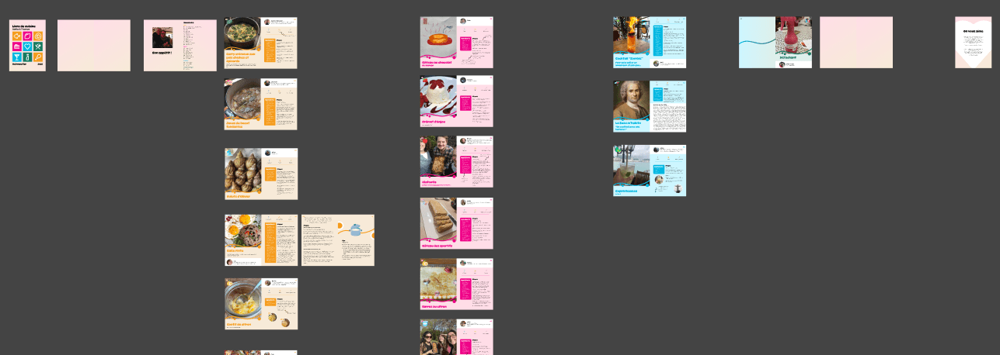

Cookbook for a Wedding
A personal project that came from love and was designed for love.
- Pages
- 60Pages.
- Print fails
- 3Print fails.
- Love
- ∞Love.

We were 2 working on the cookbook design and the contributors provided us the content.
My best friend was getting married!
As the grooms are food-aficionados, we wanted to make something special for them. We decided to design a personalized cookbook, that we were going to print with the help of a professional printer in our network.
Many contributors
20 persons contributed: we had to retrieve the cooking recipes instructions, ingredients, quality pictures, add tips and tools. It was a lengthy process that required a lot of iterations.
101: Graphic Design for print
Failed 3 times, learned a lot. The importance of resolution, of margins,of texture, transparency, etc. Definitely a full-time job, and I was proud that we managed to make it real. The emotions of the grooms was worth ALL the hours put into it.